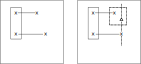
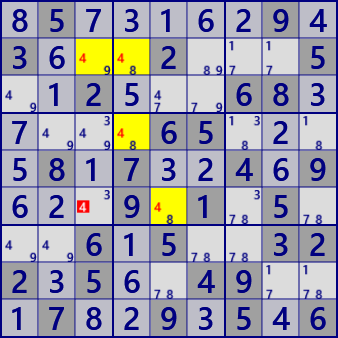
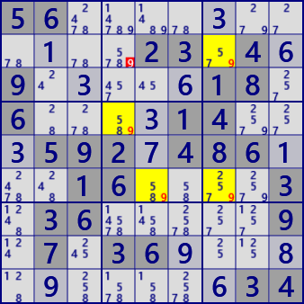
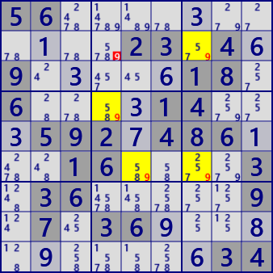

Skyscraper
Skyscraperの説明には、セル間リンクと、関係セルの参照を用います。
Skyscraperは、LockedSet、Fishと同様にパターン型の解法で、2つの強いリンクで構成されます。
左図のように着目数字Xの2つの強いリンクがあり、4つある端セルのうち1組のみ同じHouseに属しているとします。
このとき残りの端セルと同時に関係するセル（右図の△セル）は、Lockedにより候補数字からXが除外されます。

Skyscraperの解析アルゴリズムも、この図の手順とおりです。
- 着目数字Xの設定
- 2組のリンクの選択
- リンクの条件チェック(リンク端点の1対のみ同じHouse)
- 除外候補セル探索



 


.5.....9.3...2...5..2...68.....65....8.7..4.9...9.1.5...6.5..322.5..49...7..9.5.6(上段）
56...........23.4.9.....18.6....14...592.486...16....3.36.....9.7.36...........34(下段）
Skyscraperの解析プログラム
Skyscraperの解析プログラムの処理手順は、以下のとおりです。
- 着目数字Xの設定
- 2組のリンクの選択
2組のリンクの選択は組合せで選んでいます。リンクは方向を持つように生成します。 それらのリンク群から2組選んだとき(リンクIDが降順に選ぶ）、それらの端点セルが全て異なることを確認します。 次に、起点側セル同士に着目して、同じhouseに属するかをチェックします（ここでは起点としましたが、終点でもかまいません）。 もしも、リンクを方向なしで生成し組合せで2組を選ぶと、リンクの両端の比較が複雑になります。ここで採用した方法の方が単純に処理できます。 - 残りのリンク端点セルのhouse比較
先頭同士以外の端点に共通houseがないことを確認します。これは3組（先頭-終点、終点-先頭、終点-終点）を単純に比較します。 - Lockedセルの探索
2つの終点セルの影響圏の共通部分にあり、かつ 2つの始点セルの影響圏にないセルについて、候補数字Xの有無をチェックします。 あれば、Skyscraperが成立します。
public partial class CellLinkGen: AnalyzerBaseV2{
public CellLinkMan CeLKMan;
public List<UCell> BVCellLst; //BV:bivalue
public CellLinkGen( GNPX_AnalyzerMan pAnMan ): base(pAnMan){
CeLKMan=new CellLinkMan(pAnMan);
BVCellLst=null;
}
public override void Initialize(){
CeLKMan.Initialize();
BVCellLst=null;
}
public bool Skyscraper(){ //StrongLinkを使う方法
CeLKMan.PrepareCellLink(1); //strongLink生成
for( int no=0; no<9; no++ ){
int noB=(1<<no);
var SSLst = CeLKMan.IEGetNoType(no,1).ToList();
if( SSLst.Count<=2 ) continue;
var prm=new Permutation(SSLst.Count,2);
int nxtX=99;
while( prm.Successor(nxtX) ){
UCellLink UCLa=SSLst[prm.Pnum[0]], UCLb=SSLst[prm.Pnum[1]];
nxtX=0;
if( UCLa.ID<UCLb.ID ) continue; //2リンクはID降順
nxtX=1;
if( (UCLa.B81|UCLb.B81).Count!=4 ) continue;
//全てセルは異なる
Bit81 ConA1=ConnectedCells[UCLa.rc1], ConA2=ConnectedCells[UCLa.rc2];
if( !ConA1.IsHit(UCLb.rc1) || ConA1.IsHit(UCLb.rc2) ) continue;
if( ConA2.IsHit(UCLb.rc1) || ConA2.IsHit(UCLb.rc2) ) continue;
//(UCLa.rc1)(UCLb.rc1)のみ同じハウスに属している
Bit81 candHit = ConA2 & ConnectedCells[UCLb.rc2];
candHit = candHit - (ConA1 | ConnectedCells[UCLb.rc1]);
bool SSfond=false;
foreach( UCell P in candHit.IEGetUCeNoB(pBDL,noB) ){
P.CancelB = P.FreeB&noB;
SSfond=true;
}
if(SSfond) {
#region 結果
SolCode =2;
pBDL[UCLa.rc1].SetNoBBgColor(noB,AttCr,SolBkCr);
pBDL[UCLa.rc2].SetNoBBgColor(noB,AttCr,SolBkCr);
pBDL[UCLb.rc1].SetNoBBgColor(noB,AttCr,SolBkCr);
pBDL[UCLb.rc2].SetNoBBgColor(noB,AttCr,SolBkCr);
string msg2="";
if(SolInfoDsp){
string msg = "\r";
msg += " on " + (no+1) + " in";
msg += " r" + (UCLa.rc1/9+1) + "c" + (UCLa.rc1%9+1);
msg += " r" + (UCLb.rc1/9+1) + "c" + (UCLb.rc1%9+1);
msg += "\r connected by";
msg += " r" + (UCLa.rc2/9+1) + "c" + (UCLa.rc2%9+1);
msg += " r" + (UCLb.rc2/9+1) + "c" + (UCLb.rc2%9+1);
msg += "\r eliminated ";
foreach( UCell P in candHit.IEGetUCeNoB(pBDL,noB) ){
msg2 += " "+P.rc.ToRCString();
}
msg2=msg2.ToString_SameHouseComp();
ResultLong = "Skyscraper" + msg+msg2;
Result = "Skyscraper #"+(no+1) +" in "+msg2;
}
else Result = "Skyscraper #"+(no+1);
#endregion 結果
if( !AnMan.SnapSaveGP(true) ) return true;
}
}
}
return false;
}
}